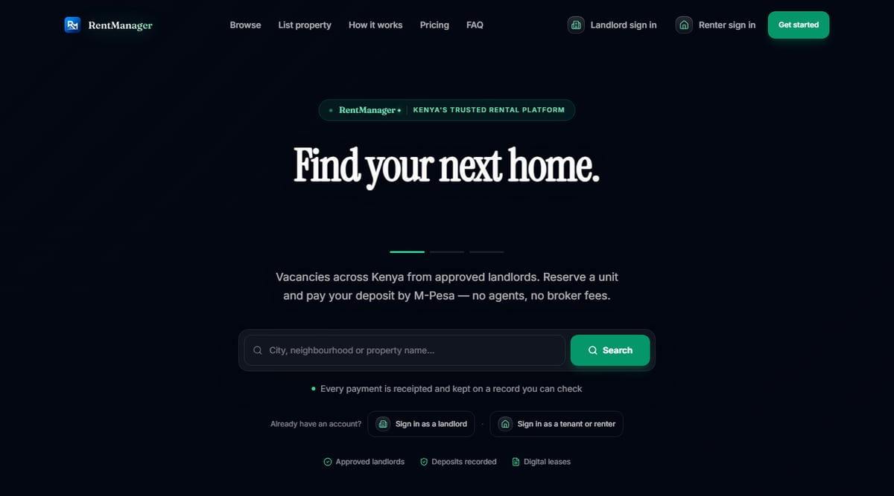

Let’s build something great together.
I’m a full-stack software engineer with more than three years of independent and freelance experience building complete systems, from the database schema to the deployed product. I work in Java and Spring Boot on the backend, React, TypeScript and Next.js on the frontend, and PostgreSQL for data.
I can own a system end to end, or take on a single feature, ship it to production and hand you the live link. RentManager, a rental platform that collects rent over M-Pesa, is the proof: designed, built and deployed by me.
I use AI tools such as Claude, Codex and Aider to move faster on scaffolding, debugging and tests. I review every line before it ships, and I own what it does in production.
- Experience
- 3+ years · since 2023
- Based in
- Homabay, Kenya · UTC+3
- Focus
- Java · Spring Boot · PostgreSQL
- Status
- Available immediately
I’m open to work
I’m looking for a full-time role on an engineering team, ideally somewhere I can keep working on systems where correctness matters. Contract work suits me just as well, and I have no notice period, so I can start as soon as we agree. Below is exactly what I’m open to, so neither of us wastes an email finding out.
Backend or full-stack. Java and Spring are my strongest, though I’ve shipped the TypeScript half of a real product too.
I’m still a Computer Science student, so an internship fits my schedule. I’d treat it as the real thing.
SaaS products, business workflow systems, backend and API work, M-Pesa integrations. What that looks like →
I’d like to work alongside engineers with more experience than me. Having someone review my code is worth more to me than pay right now.
Where I can work
Remote, any timezone. I’m on UTC+3 in East Africa, so my working day overlaps Europe, the Middle East, India and most of Africa, with a morning window for the US East Coast. I can also work on-site in Kenya, and I’d relocate for the right role.
How to reach me
WhatsApp is fastest. I check it daily and usually reply the same day. Email is better for anything long.
RentManager
Deployed · LiveA property and rental-management platform for the Kenyan market. Landlords manage properties, units and leases. Tenants pay rent by M-Pesa and see a running ledger of every payment. The platform handles commission, payouts and Kenya’s monthly rental-income tax rules. I designed and built all of it on my own.
www.rentmanagerke.workers.dev ↗
The source is public, so none of the numbers on this page have to be taken on trust: backend, web, mobile.

The live RentManager product. Click through to open it.
It ships on three surfaces
Landlord & tenant app
63 routes covering the landlord dashboard, the tenant portal, public listings and reservations, and an admin console.
Next.js 16 · React 19 · TanStack QueryNative app
27 screens with push notifications, offline detection, secure token storage and crash reporting.
React Native · Expo · Expo RouterThe backend both use
20 modules behind one contract. Tenant isolation comes from the verified token, never from a request header.
Java 21 · Spring Boot 3 · PostgreSQLEverything I am building, live
Loading…This section is not a list I maintain by hand. It reads my public repositories directly, so a project I push tonight is on this page tonight, and a claim I stop being able to back disappears on its own.
Language footprint
Share of bytes across every public repository. It is a measure of where my time has gone, not a measure of skill, and it is counted rather than claimed.
Repositories
What I can do
The stack and practices behind RentManager, grouped the way a system is built. The skills page rates each one and points to the code behind it.
Backend
- Java 21
- Spring Boot 3
- Spring Security
- JWT / JWKS
- REST · OpenAPI
- Ports & adapters
Data
- PostgreSQL
- Flyway
- JPA / Hibernate
- Schema & constraint design
- Transactional outbox
Frontend & mobile
- TypeScript
- JavaScript
- React 19
- Next.js App Router
- TanStack Query
- React Native · Expo
- Android & iOS
Payments & integrations
- M-Pesa Daraja
- STK push · B2C
- Clerk auth
- Africa’s Talking SMS
Engineering fundamentals
- Object-oriented design
- SOLID
- Clean Architecture
- Domain-Driven Design
- Data structures & algorithms
- Agile
Testing & delivery
- JUnit 5
- Mockito
- Testcontainers
- ArchUnit
- Docker
- Git · GitHub Actions
- Render · Cloudflare · Neon
- AI-assisted (Claude, Codex, Aider)
Strongest, built and hardened in production Shipped with it, still deepening
Where I am still shallow: running a system under real production load, and distributed systems, which I have avoided on purpose because a modular monolith was the right call at this size.
Judgement, in the code itself
Anyone can describe how they think. These are four comments from RentManager’s backend, quoted word for word, each linked to the file it lives in. They are the clearest evidence I can give you of how I reason about a system.
This does NOT replace the DB-level idempotency guard
(uk_rent_transactions_tenant_external_reference) — that's what prevents a
successful payment from ever being double-applied. This only prevents
wasted/duplicate STK prompts from being sent to Safaricom in the first
place, which is a cost/UX concern, not a correctness one.Knowing which guard actually protects the money, and refusing to let a convenience feature take credit for it, is the difference between a system that looks safe and one that is.
Replaces SimpleRateLimiter, which could not work
That class was referenced by nothing, and would not have helped if it had
been. It kept an int per key with no time component at all, so its
limit of 100 was a lifetime cap that latched closed permanently — nothing
ever called its reset. Its putIfAbsent / get /
put sequence was a non-atomic read-modify-write, so two concurrent
requests could read the same count and both write count + 1,
undercounting under exactly the load a limiter exists to stop. And its map
never evicted anything.
That is me reviewing my own earlier code and finding a race condition in it. The
replacement mutates inside ConcurrentHashMap.compute, so the check and
the record are one atomic step.
Stands alone rather than extending BaseTenantEntity, for the same
reason RentReminderJpaEntity does: the base carries
updated_at and an @Version column, and V86 forbids updates
outright. Inheriting mutability machinery onto an append-only table adds
two columns that can never move and invites someone to try.Designing so the wrong thing is hard to express, rather than merely forbidden in a document, is the habit I most want to keep.
Until now the ONLY production code that created a tenant_profile row was
ReservationFulfillmentOrchestrator: a stranger reserving a vacant unit on the
public site and paying a deposit by M-Pesa. A landlord signing up with tenants
already living in their units had no way to enter them, so no lease, ledger,
payment or renter portal could exist for an existing tenancy. That is the
normal case in Kenya, which made the product unusable for it.
Two columns blocked it:
clerk_user_id NOT NULL — a renter added by their landlord has no Clerk
account yet, and may never create one (a caretaker collects cash).
email NOT NULL — many renters give only a phone number.
The bug here was not in the code. It was an assumption in the schema: that every
renter arrives through the website. Most Kenyan tenancies already exist before the
software does, and two NOT NULL constraints quietly made the product
useless for them.
What I build
Software for businesses with real workflows and real rules to enforce. Not marketing sites, and not prototypes that stop at the demo.
SaaS platforms with real business logic
Multi-tenant systems where the hard part is the domain, not the interface: leases, ledgers, approvals, commissions, and the rules about who may do what to whose money.
Payment & third-party integrations
M-Pesa Daraja (STK push, B2C payouts, callback handling), SMS delivery and identity providers. It’s unglamorous plumbing, and it has to be idempotent and auditable rather than merely working on a good day.
Business workflow systems
Turning a process that currently lives in spreadsheets and WhatsApp threads into software with an actual data model and an audit trail behind it.
Full-stack web & mobile applications
Next.js and React on the web, React Native on mobile, Spring Boot and PostgreSQL behind both. I build and own every side of the contract between them.
How I think about building this kind of system
Five things I’ve come to hold as rules, from building RentManager’s money paths.
| Principle | Why |
|---|---|
| Money is append-only. | Every rent transaction is written once and never edited or deleted. A mistake gets reversed with a new, linked entry, so the ledger still shows what happened, including the correction. |
| Don’t reach for distributed complexity you don’t need yet. | RentManager runs as a modular monolith with a database-backed outbox instead of a message broker. A queue would have been a more “impressive” architecture diagram and a worse decision at this scale. |
| Fail closed on anything legal or financial. | The tax module computes VAT and rental-income tax against real Kenyan law, but every gate defaults to off until a human confirms it applies. Wrong-by-default is not an acceptable failure mode for a tax calculation. |
| The schema is a historical record, not a draft. | 99 sequential migrations, never edited after they’ve run. If something needs to change it gets a new migration, so the database’s history stays honest. |
| If it isn’t tested, assume it’s broken. | 1,588 backend tests, including an architecture test that fails the build if the property module’s application layer reaches into its infrastructure. The number isn’t the point. The parts I haven’t tested are the parts I don’t trust, and I’ll tell you which those are. |
How I work
- 01Understand the problem.
What’s manual today, what has to never go wrong, who actually uses this.
- 02Map the domain before writing code.
Entities, rules, edge cases. The expensive mistakes happen in the model, not the syntax.
- 03Design the architecture, and write down the trade-offs.
What I chose, what I rejected and why, so a decision can be revisited later instead of argued from scratch.
- 04Build in focused, tested increments.
One module and one migration at a time, rather than a big-bang integration at the end.
- 05Test the money paths first.
Anything irreversible gets covered before the interface around it does.
- 06Ship, then say what’s still open.
A production checklist, plus a written list of what isn’t hardened yet. I don’t claim everything is finished.
A bit about me
I’m a full-stack software engineer and Computer Science student in Kenya. Most of what I know about building software came from building RentManager end to end, not from a course. I like problems where correctness matters more than speed: money, records, anything a business can’t afford to get wrong. I’m building depth by taking on harder versions of that same problem.
“I’m building depth through increasingly complex systems, not claiming expertise I haven’t earned yet.”
Hiring, or have something that needs building?
If it involves real business rules, money, or records that have to stay correct, that’s the problem I want to work on. Tell me what you’re building, or what the role is.